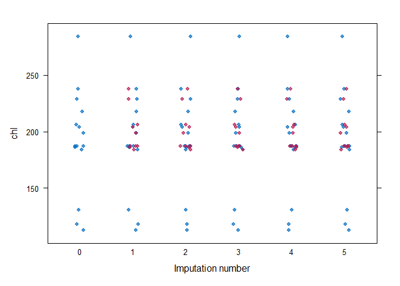

futuremice parallelizes the main functionality of the mice package using future and furrr. This enables the use of a progress bar for updates, as well as an early stopping method to save time spent on unneeded iteration or manual convergence checks (not quality checks - you still have to assess the results yourself).
Installation
You can install the development version of futuremice like so:
# You will need Rtools to install packages from Github on Windows
# `devtools` with throw an informative error if Rtools is not found
if (!"devtools" %in% installed.packages()) install.packages("devtools")
devtools::install_github("jesse-smith/futuremice")Minimal Example
Let’s run the example from the mice package documentation, but in parallel.
# Load {futuremice}
library(futuremice)
# Use a local seed
withr::local_seed(1L)
# Evaluate futures in parallel - max of two workers to avoid hogging resources
future::plan("multisession", workers = pmin(2L, future::availableCores()))
# Use {progress} package for progress bar - shows diagnostics in real time
progressr::handlers("progress")futuremice uses the future package to run imputations in parallel. By default, future will run a "sequential" plan, which is no different (and a little less efficient) than calling mice::mice(). To take advantage of multiple CPUs, we can use a "multisession" plan (see the vignette from the future package for details on different plans). future_mice() also provides a progress bar and real-time convergence diagnostics using progressr; however, the default progress bar does not show messages, so we’ll use the progress handler to see our diagnostics.
Now, let’s impute our missing data:
# Impute the missing values using defaults
# Use `progressr::with_progress()` to show the progress bar
mids <- progressr::with_progress(future_mice(mice::nhanes))
#> Converged in 58 iterations
#> R-hat: 1.036/1.022/1.021/1.033
# Or start with `mice::mice()` and finish with `future_mids()`
mids2 <- mice::mice(mice::nhanes, maxit = 1L, printFlag = FALSE)
mids2 <- progressr::with_progress(future_mids(mids2, maxit = 100L))
#> Converged in 68 iterations
#> R-hat: 1.035/1.021/1.025/1.017/1.023
# View the resulting `mids` (*m*ultiply *i*mputed *d*ata *s*et) object
mids
#> Class: mids
#> Number of multiple imputations: 5
#> Imputation methods:
#> age bmi hyp chl
#> "" "pmm" "pmm" "pmm"
#> PredictorMatrix:
#> age bmi hyp chl
#> age 0 1 1 1
#> bmi 1 0 1 1
#> hyp 1 1 0 1
#> chl 1 1 1 0
# List the actual imputations for BMI
mids$imp$bmi
#> 1 2 3 4 5
#> 1 30.1 30.1 30.1 30.1 30.1
#> 3 30.1 30.1 30.1 30.1 30.1
#> 4 28.7 28.7 28.7 28.7 28.7
#> 6 21.7 21.7 21.7 21.7 21.7
#> 10 20.4 20.4 20.4 20.4 20.4
#> 11 27.2 27.2 27.2 27.2 27.2
#> 12 27.4 27.4 27.4 27.4 27.4
#> 16 30.1 30.1 30.1 30.1 30.1
#> 21 27.2 27.2 27.2 27.2 27.2Note that future_mice() will often run longer than mice::mice()’s default of 5 imputations before convergence is confidently achieved. Also note that we will only get a progress bar if we wrap the call in with_progress(); this is a feature of the progressr package.
We can use the resulting mids object just like the result of a call to mice::mice(). Let’s inspect the quality of the imputations:
# Inspect quality of imputations
mice::stripplot(mids, chl, pch = 19, xlab = "Imputation number")
In general, we would like the imputations to be plausible, i.e., values that could have been observed if they had not been missing. Now let’s fit a model to the imputed data set and pool the results:
# Fit complete-data model
fit <- with(mids, lm(chl ~ age + bmi))
# Pool and summarize the results
summary(mice::pool(fit))
#> term estimate std.error statistic df p.value
#> 1 (Intercept) -21.865304 56.857847 -0.3845609 20.23797 0.704574068
#> 2 age 27.399468 8.579227 3.1936989 20.23797 0.004512915
#> 3 bmi 6.237545 1.812132 3.4421031 20.23797 0.002544689The complete-data model is fit to each imputed data set, and the results are combined to arrive at estimates that properly account for the missing data.
We can also compare two mids objects using compare_mids():
compare_mids(mids, mids2, ignore_rng = TRUE)
#> Elements of `x` not in `y`
#> ✔ None
#> Elements of `y` not in `x`
#> ✔ None
#> Shared elements with differences:
#> ✖ iteration
#> ✖ chainMean
#> ✖ chainVar
#> Shared elements without differences:
#> ✔ data
#> ✔ imp
#> ✔ m
#> ✔ where
#> ✔ blocks
#> ✔ nmis
#> ✔ method
#> ✔ predictorMatrix
#> ✔ visitSequence
#> ✔ formulas
#> ✔ post
#> ✔ blots
#> ✔ ignore
#> Shared elements ignored:
#> ℹ call
#> ℹ seed
#> ℹ lastSeedValue
#> ℹ loggedEvents
#> ℹ version
#> ℹ dateThis will show us where differences occur between the two objects (if there are any). We’ll ignore attributes that depend on the RNG state because evaluating imputations in parallel requires a different kind of random number generation than evaluating sequentially, as we did in the first iteration of mice::mice().
Code of Conduct
Please note that the futuremice project is released with a Contributor Code of Conduct. By contributing to this project, you agree to abide by its terms.